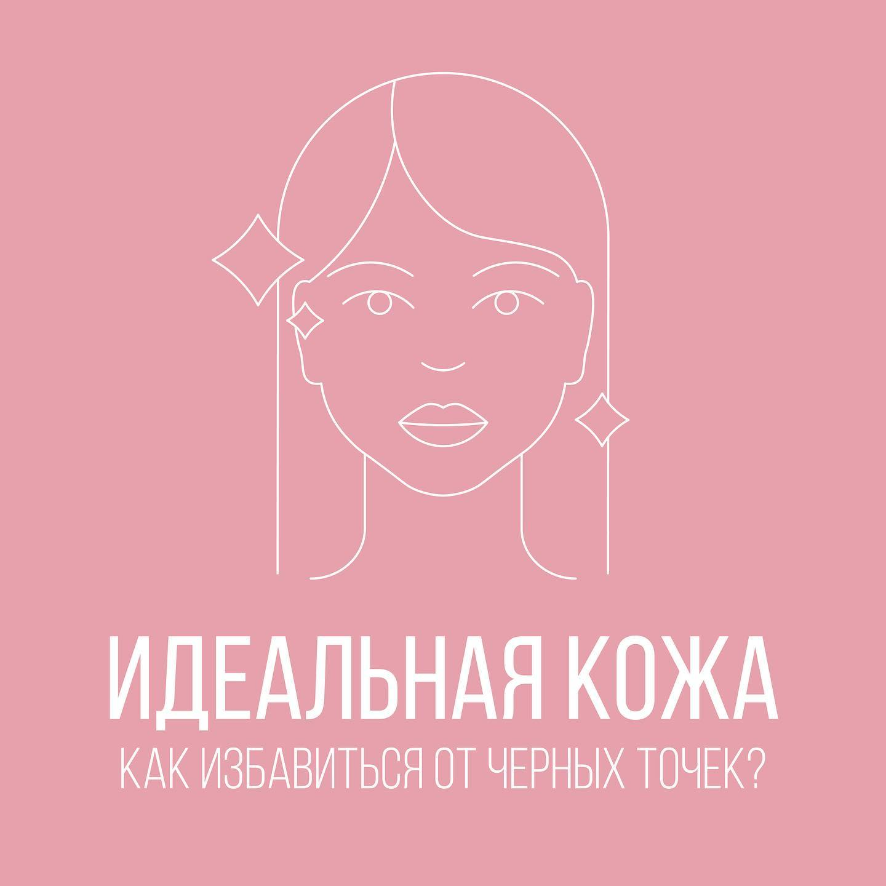

Фахівець з медичною освітою
Роблю найкращу атравматичну чистку обличчя!
З пілінгами на "ТИ"
Мезотерапія, біоревіталізація
После чистки в течение 1 - 2 суток может повыситься салоотделение, так как убрали пробки, отток секрета - вытераем хлоргексидином.
Соблюдая эти правила, Вы не даёте бактериям попадать на кожу, а значит и риск воспалений будет ниже
|  |
Эти вопросы мне задают при каждой чистке. Увы, раз и навсегда решить проблему расширенных пор невозможно. Но это не значит, что нельзя свести к минимуму факторы, которые усугубляют ситуацию. Именно эти привычки усложняют жизнь нашим порам и тем самым способствуют появлению чёрных точек на лице:
|
| Medicare | Не сушит, не раздражает и не обезвоживает кожу. Деликатно очищает от загрязнений, макияжа и жира, устраняет гиперкератоз, не стягивает, выравнивает поверхность кожи. |
| Dr. Kadir | Жидкое мыло для кожи лица бережно снимает загрязнения и ороговевшие клетки с поверхности эпидермиса, не травмируя новый слой живых клеток. Такое воздействие возможно благодаря синтезу 5% альфа-гидроксильной кислоты, добываемой из фруктов. Сок граната в составе оказывает антиоксидантный эффект. Токоферол смягчает кожу. |
| Dr. Kadir B3 | Гель в3 глубоко очищает поры от загрязнений и жира, позволяет кожи дышать, оказывает отличный антисептический эффект. Имеет мягкое но интенсивное действие. После глубокого очищения, гель смягчает, увлажняет и питает кожу не оставляя дискомфорта. Успокаивает раздражения и воспаления. |
| Dr.Spiller | Очищающий гель для чувствительной жирной кожи - водорастворимый гель для очищения лица предупреждает раздражение, поддерживает нормальную степень увлажнения, предохраняет от разрушения эпидермальный барьер, тщательно очищает и освежает кожу, снижает чувствительность к аллергенам. |